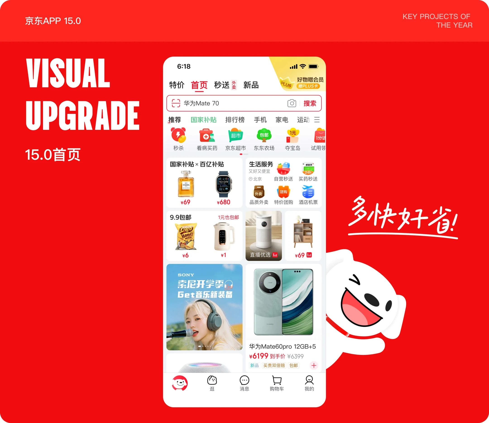
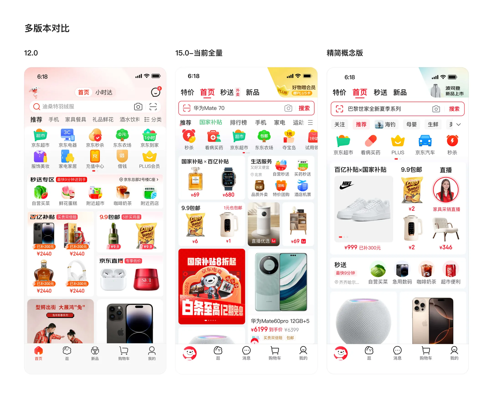
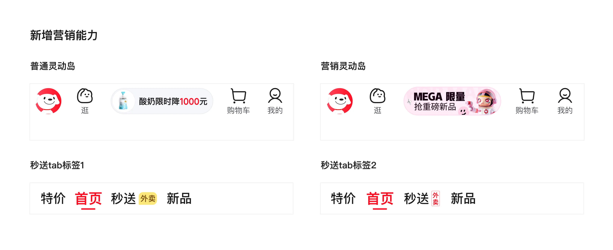
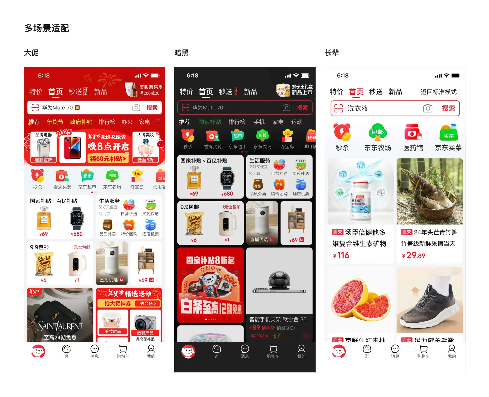
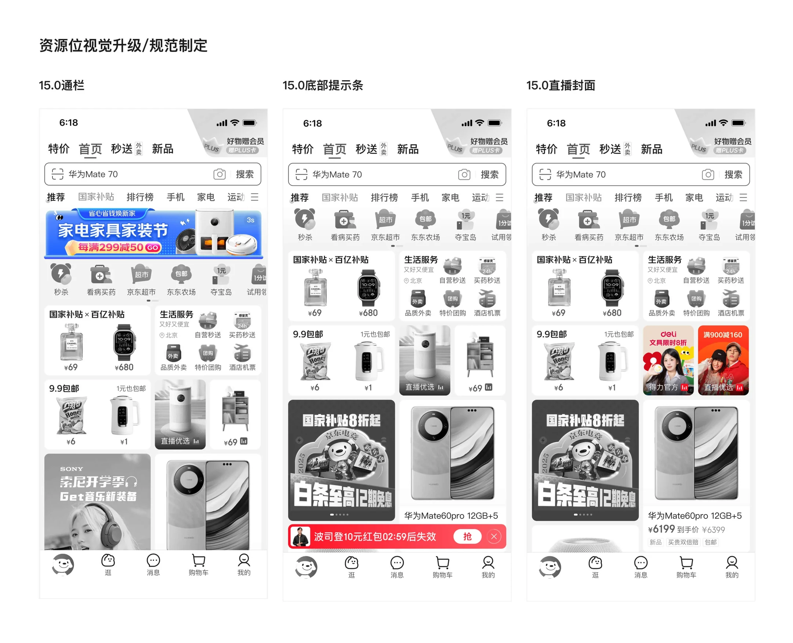

项目概览
时间与类型
时间周期：2024.5-2024.9
项目类型：京东 App 年度首页改版
我的角色
首页视觉设计师
改版项目设计师
项目背景
围绕京东 App 15.0 首页进行视觉升级，通过结构梳理、模块优化和规范沉淀，提升首页的信息效率、视觉统一性和版本升级感。


时间周期：2024.5-2024.9
项目类型：京东 App 年度首页改版
首页视觉设计师
改版项目设计师
围绕京东 App 15.0 首页进行视觉升级，通过结构梳理、模块优化和规范沉淀，提升首页的信息效率、视觉统一性和版本升级感。

战略变化下首页承载能力需要调整：首页作为集团多业务入口，需根据阶段战略重新调整业务入口、内容层级与资源分发。
“多快好省”心智传递不够清晰：原结构表达分散，需通过顶部 Tab 与下拉二楼强化“多快好省”的整体认知。
多版本迭代下的视觉混乱：多业务入口长期迭代导致视觉重点分散，需统一规划层级，减少冗余装饰，提升整体整洁度。
传达集团战略：在集团战略指导下，重构首页入口与内容层级，强化“多快好省”的核心心智，同时兼顾用户体验、业务转化和各事业部门的资源支持。
整体视觉升级：通过新的视觉方向，统一文字梯度，弱化营销氛围表达，调整模块布局，使首页更整洁更高效。

业务调整下的视觉表现策略：通过多种布局和视觉表现，探索何种视觉更优。
重新分配内容层级：原生活服务卡片面积大点击效率低，需结合业务表现调整露出面积，用轻量小卡入口提升效率。
组件形态收敛：参与百宝箱模块的形态优化，将多种展示方式收敛为一行横滑结构，降低用户理解成本并提升模块一致性。
营销与品牌能力加强：在底部消息入口增加仿照灵动岛的新型通知能力，强化营销信息的即时触达；同时在秒送 Tab 右侧增加提示标签与动画，提升入口的可见性与用户感知。
多版本适配：首页 C 端改造的同时，优化大屏适配和暗黑 / 大促 / 长辈等不同场景页面。



新版首页上线后，整体视觉统一性与版本升级感得到提升，重点入口、营销信息与品牌表达更清晰，也让首页更好承接集团战略下的多业务资源。
首页改版并非单点视觉升级，而是在集团战略下进行结构调整。设计中需平衡业务目标、内容传递、用户体验与资源支持，在创新改版和用户使用习惯之间找到可落地方案。